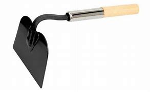
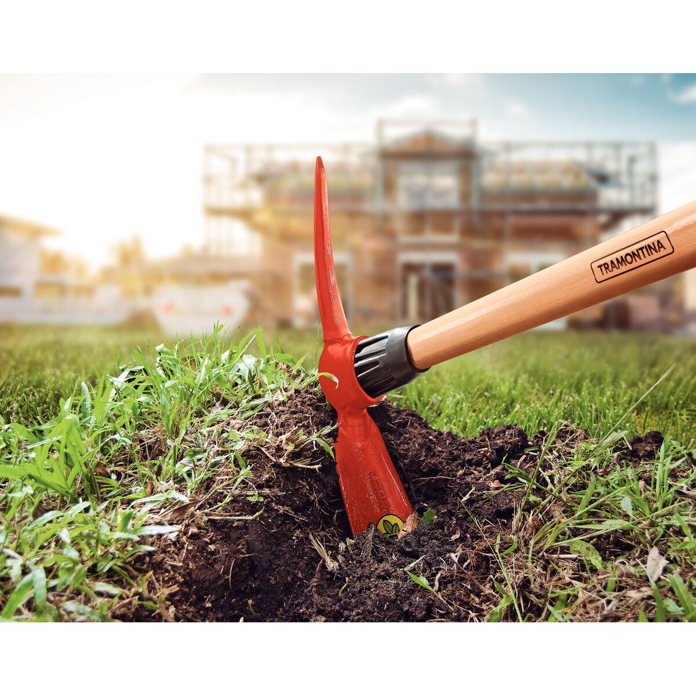
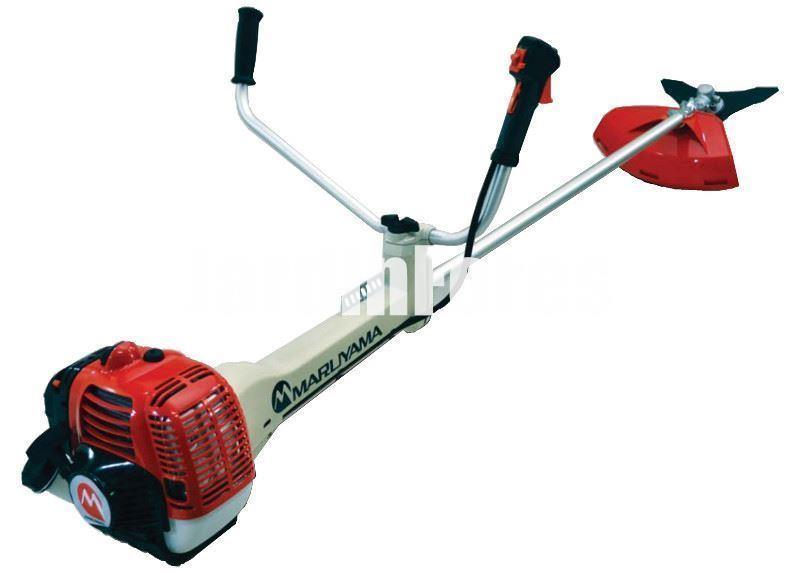

"HERRAMIENTAS TALLER MECANICO"
Desarmadores planos
Desarmadores de cruz
Desarmadores de estrella
LLaves espanolas
LLaves de astrias
LLave de cruz
LLaves Allen
juego de Autocle(dados)
Martillo de bola
Arco de segueta
Gato de patin(hidrauico)
Gato de botella(hidraulico)
Taladro
Jgo. de brocas
Pinzas de chofer
Pinzas de punta
Linterna
Pinzas de precion
Stilzon
Pericos
"HERRAMIENTAS PARA EL CAMPO Y JARDIN"
Azadon

Azadon tomatero
Bieldo
Pala derecha
Pala escarraman
Pala de punta
Pala cucharuda
Pala carbonera
Rastrillo para jardin
Tijeras para cortar pasto

Zalpapico

Desbrosadora